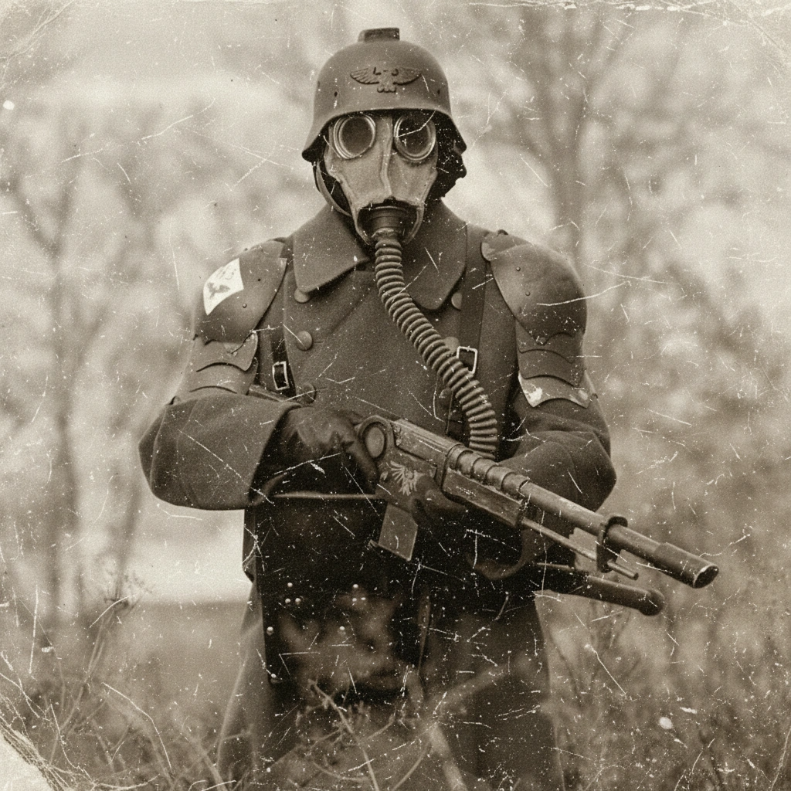
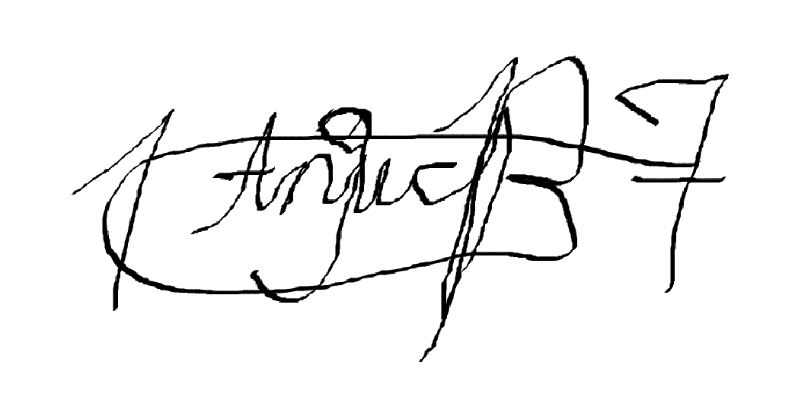

Военная часть: 118-я Штурмовая Бригада 7-го Корпуса Смерти Крига
Номер/имя: 22058787
Звание: Гаупт-Ефрейтор
Должность: Квартирмейстер | Знаменосец
Возраст: 22 года
Место рождения: Мир-Смерти Криг, Подземный Улей В-27
Кампании, в которых принял участие: Гераль-Примус, Урл Фастинг, Гатис-Рэк, Дэстляр-Моос
Текущий статус: АКТИВЕН

Фотопортрет, приложенный к делу
Подпись офицера, утвердившего личное дело:

Дата утверждения: 21.11.М42
Возраст зачисления в новобранцы: 14 лет
Возраст зачисления в шутце: 18 лет
Место призыва: Гарнизонный призывной пункт №17, Подземный Улей В-27, Мир-Смерти Криг
Награды и поощрения:
— Медали: Печать Чистоты, "Простой Орёл", Серебрянный Череп, "Окопный Штурмовик"
Взыскания и дисциплинарные меры:
[1] Дата: 30.10.М42
Ответственный за взыскние: Унтер-Офицер 2650
Причина: Использование несанкционнированного снаряжения для аугментации бойца другого боевого отделения (1-й Харонский Полк).
Меры: Приставленная обязанность в запросе разрешения перед началом любой хирургической операции у Унтер-Офицера 2650 на неограниченный срок.
Текущий статус: Остановлено 25.11.М42. В дальнейшем. возобновлено 07.12 унтер-офицером 2650 и доведено до дела дисциплинарного дела [2].
[2] Дата: 07.12.М42
Ответственный за взыскние: Унтер-Офицер 2650
Причина: Выявление дополнительной информации по растрате материала в деле [1].
Меры: Запрет на использования специального вооружения Обер-Ефрейтору 8787. На момент настоящего документа, данным инвентарём является: Лаз-пистолет, Огнемёт. Взамен допускается использование лазгана.
Текущий статус: Остановлено 03.01.М42.
Служебные записи:
[1] Дата: 12.10.М42
Должность / роль: Шутце, Солдат 7-го Корпуса Смерти Крига
Был частью пополнения рядового состава 118-й штурмовой бригады 7-го Корпуса Смерти Крига, прибывшего из Подземного Улья В-27 на Имперский корабль "Клинок Вентаны".
[2] Дата: 13.10.М42
Должность / роль: Шутце, Квартирмейстер 7-го Корпуса Смерти Крига
Был принят в ряды квартирмейстеров после экзаминации и официального принятия Обер-Фельдфебелем 2650, старшим квартирмейстером 7-го корпуса.
[3] Дата: 14.10.М42
Должность / роль: Шутце, Квартирмейстер 7-го Корпуса Смерти Крига
Участвовал в защите корабля от аномальных сил, в результате чего был повышен в звании Обер-Фельдфебелем 2650 до Обер-Шутце.
[4] Дата: 15.10.М42
Должность / роль: Обер-Шутце, Квартирмейстер 7-го Корпуса Смерти Крига
Участвовал в первой операции, начавшую кампанию на Гераль-Примусе, по захвату и удержанию плацдарма на поверхности планеты.
[5] Дата: 16.10.М42
Должность / роль: Обер-Шутце, Квартирмейстер 7-го Корпуса Смерти Крига
Участвовал в обороне аванпоста от архиврага. За доблесть в бою, приказом Гауптмана 1389 Регеля Туркула, получил печать Чистоты, медали "Серебрянный Череп" и "Просто Орёл".
[6] Дата: 26.10.М42
Должность / роль: Обер-Шутце, Квартирмейстер 7-го Корпуса Смерти Крига
Участвовал в битве против сил еретиков после раскрытия раздведывательной миссии, в результате чего, по приказу Гауптмана 1389, был повышен в звании Геверхарта и получил медаль "Окопный Штурмовик".
[7] Дата: 30.10.М42
Должность / роль: Геверхарт, Квартирмейстер 7-го Корпуса Смерти Крига
Участвовал в бою во время марша-прорыва к системе ПКО, за что, по приказу Гауптмана 1389 Регеля Туркула, был повышен до звания Ефрейтора.
[8] Дата: 02.11.М42
Должность / роль: Ефрейтор, Квартирмейстер 7-го Корпуса Смерти Крига
Приказом Гауптмана 1389 Регеля Туркула был назначен на должность Знаменосца корпуса.
[9] Дата: 03.11.М42
Должность / роль: Ефрейтор, Квартирмейстер, Знаменосец 7-го Корпуса Смерти Крига
Участвовал в операции по захвату ПКО. Сопровождал Гауптмана 1389 Регеля Туркула в ходе рейда, как ведущий знаменосец.
[10] Дата: 04.11.М42
Должность / роль: Ефрейтор, Квартирмейстер, Знаменосец 7-го Корпуса Смерти Крига
Как знаменосец, открыл церемонию похорон Гауптмана 1389 Регеля Туркула, погибшего в бою при штурме ПКО.
[11] Дата: 08.11.М42
Должность / роль: Ефрейтор, Квартирмейстер, Знаменосец 7-го Корпуса Смерти Крига
Под руководством Гауптмана 1917 Аписа Вернера, вывел большинство солдат на эвакуацию с поверхности Гераль-Примуса.
[12] Дата: 18.11.М42
Должность / роль: Ефрейтор, Квартирмейстер, Знаменосец 7-го Корпуса Смерти Крига
Занимался контролью перевоза снабжения при высадке на Урл Фастинг, во время начала кампании на Моосе.
[12] Дата: 19.11.М42
Должность / роль: Ефрейтор, Квартирмейстер, Знаменосец 7-го Корпуса Смерти Крига
Участвовал в операции по прочистке местной фауны под командованием Лейтенанта 7026 Кранса. Получил ранение левой руки.
[14] Дата: 21.11.М42
Должность / роль: Ефрейтор, Квартирмейстер, Знаменосец 7-го Корпуса Смерти Крига
Приказом Обер-Лейтенанта 1388 Штайнерра, повышен до звания Обер-Ефрейтора за отличную службу в ходе кампании на Гераль-Примусе и текущей кампании на Урл-Фастинге.
[15] Дата: 23.11.М42
Должность / роль: Обер-Ефрейтор, Квартирмейстер, Знаменосец 7-го Корпуса Смерти Крига
Во время последних фаз кампании на Урл-Фастинге, командовал оставшимися рядовыми силами во время сдержавания натиска местной фауны и дальнейшего отлёта с поверхности планеты.
[16] Дата: 27.12.М42
Должность / роль: Обер-Ефрейтор, Квартирмейстер, Знаменосец 7-го Корпуса Смерти Крига
Руководил составом хирургениума во время чрезвычайного происшествия, ставшей причиной дальнейшего карантина.
[17] Дата: 01.12.М42
Должность / роль: Обер-Ефрейтор, Квартирмейстер, Знаменосец 7-го Корпуса Смерти Крига
Участвовал в рядах сил специального назначения во время штурма города Эшлок в начале кампании на Гатис-Рэке.
[18] Дата: 22.12.М42
Должность / роль: Обер-Ефрейтор, Квартирмейстер, Знаменосец 7-го Корпуса Смерти Крига
Руководил рядовыми силами 118-й штурмовой бригады во время обороны внешних стен Эшлока во время нападения сил ренегатов.
[19] Дата: 23.12.М42
Должность / роль: Обер-Ефрейтор, Квартирмейстер, Знаменосец 7-го Корпуса Смерти Крига
По приказу Унтер-Офицера 2650 Адлера, был назначен ответственным за удержание укреплений и установку аванпостов среди рядовых сил 118-й штурмовой бригады во время обороны Эшлока.
[20] Дата: 24.12.М42
Должность / роль: Обер-Ефрейтор, Квартирмейстер, Знаменосец 7-го Корпуса Смерти Крига
Участвовал в отражении нескольких атак противника на внешние стены Эшлока. Получил ранение левой руки и правой ноги.
[21] Дата: 26.12.М42
Должность / роль: Обер-Ефрейтор, Квартирмейстер, Знаменосец 7-го Корпуса Смерти Крига
Был отвественным во время одной из крушащих атак противника на внешние стены Эшлока. Руководил дальнейшим отсуплением рядовых сил и встречей с подкреплением под руководством фельдфебеля 0793.
[22] Дата: 28.12.М42
Должность / роль: Обер-Ефрейтор, Квартирмейстер, Знаменосец 7-го Корпуса Смерти Крига
Под руководством Гауптмана 1917 Аписа Вернера, участвовал в полномасштабном расчищении Эшлока от сил ренегатов.
[23] Дата: 30.12.М42
Должность / роль: Обер-Ефрейтор, Квартирмейстер, Знаменосец 7-го Корпуса Смерти Крига
Участвовал, как 1 из 3 выделенных квартирмейстеров в силы специального назачения, в штурме дворца мятежного аристократического дома Нам, под командованием Фельдфебеля 3322 и Обер-Фельдфебеля 6790.
[24] Дата: 05.01.М42
Должность / роль: Обер-Ефрейтор, Квартирмейстер, Знаменосец 7-го Корпуса Смерти Крига
Руководил рядовыми силами 118-й штурмовой бригады во время обороны "Клинка Вентаны" от вражских сил Т'ау.
[25] Дата: 06.01.М42
Должность / роль: Обер-Ефрейтор, Квартирмейстер, Знаменосец 7-го Корпуса Смерти Крига
Занимался контролью перевоза снабжения при высадке на Дэстляр-Моос, во время специальной подводной операции.
[26] Дата: 08.01.М42
Должность / роль: Обер-Ефрейтор, Квартирмейстер, Знаменосец 7-го Корпуса Смерти Крига
Ввиду обновления системы званий Унтер-Офицером 2650 Адлером, был повышен до звания Гаупт-Ефрейтора.
Общий статус годности: ГОДЕН
Рост: 192 см Вес: 88 кг
Слух: Категория "А" Зрение: Категория "А"
Перенесённые ранения и повреждения:
— Глубокое рассечение на левой руке (рвано-резаное)
Дата: 19.10.M41
Обстоятельства: Нападение местной фауны на Урл Фастинге при операции под командованием Лейтенанта 7026 Кранса. [12]
Лечение: Полевой Хирургениум на аванпосте Урл Фастинга, Старший Квартирмейстер 2650.
— Прострел в ладони левой руки
Дата: 24.12.M41
Обстоятельства: Нападение сил ренегатов на внешние стены Эшлока при обороне города. [20]
Лечение: Полевой Хирургениум на аванпосте Гатис-Рэка в Эшлоке, Сестра Битвы Александрина Митчелл.
— Открытый перелом правой ноги
Дата: 24.12.M41
Обстоятельства: Нападение сил ренегатов на внешние стены Эшлока при обороне города. [20]
Лечение: Полевой Хирургениум на аванпосте Гатис-Рэка в Эшлоке, Сестра Битвы Александрина Митчелл.
Импланты и протезы:
— ОТСУТСТВУЮТ
Психическое состояние:
— Стабильное. Отклонений не выявлено.
[1] Осмотр провёл(а): Фельдфебель 8911 Кагори
Дата осмотра: 21.11.М42
Личные коментарии: Отсутствуют
[2] Осмотр провёл(а): Адепт Омоложения Сипфора Галифей
Дата осмотра: 25.12.М42
Личные коментарии: Отсутствуют
Служебные особенности и характер:
— Вступление в ряды шутце в позднем возрасте позволило бойцу продемонстрировать быструю адаптацию и решитильность, в сравнении со своими однополчанцами.
— Проявляет высокое желание спасать и поддерживать своих товарищей, что привело к взысканию [1] и последующему взысканию [2].
Личные наблюдения квартирмейстера и офицеров корпуса:
— ОТСУТСТВУЮТ
Биография до перевода в 7-й Корпус Смерти Крига:
До включения в состав 7-го Корпуса Смерти Крига ефрейтор 8787 был уроженцем Подземного Улья В-27. На самом раннем этапе его развития в инкубационной партии произошёл редкий, но не уникальный для Крига случай: тот вышел из инкубационного периода позднее положенного срока. Причиной задержки в его дозревании стала небольшая аномалия в питательном растворе одной из капсул партии.
К моменту начала первичной подготовки 8787 был фактически старше своих сослуживцев физиологически и нейронально.
С первого же дня учебной роты при призывном пункте №17 инструкторы отмечали у 8787 более быстрое формирование логических связей и повышенную скорость обработки информации.
Именно благодаря этому в юном возрасте он был временно прикрепл ён к складскому отсеку, где впервые столкнулся с дисциплиной Муниторумского учёта, что затем дисциплинировало его к отчетности.
До призыва в шутце, 8787 прошёл стандартный цикл подземных работ: расчистку завалов, перенос снаряжения, сопровождение ремонтных бригад и участие в укреплении траншейных линий нижних уровней Улья В-27. В боевой подготовке был оценён как дисциплинированный, исполнительный, не склонный к импровизации — но при этом способен к быстрым реакциям в стрессовых ситуациях.
Когда пришло время отправлять партию пополнения за пределы В-27, 8787 был включён в неё почти автоматически и он оказался в эшелоне сил Лорда-Генерала Штайнера, направленном к 7-му Корпусу Смерти Крига.